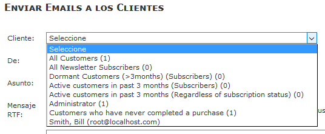

So this is normal:

See Changelog for current status.
GPL Licence
In Zen Cart 158 all the language constants were moved from a list of "defines" into arrays to prevent php errors being triggered by constants being overriden/redefined.
This language pack is identical to the US english version but uses two additional files to override the US english/default constants
Admin: uses ADMIN_FOLDER/includes/languages/extra_definitions/lang.overrides_locale_spain.php
Shopfront: uses /includes/languages/TEMPLATE_NAME/lang.spanish.php
In addition all uses of "invoice" are translated as "pedido" instead of "factura". In Spain a "factura" must contain a tax id for it to be legally called a factura/invoice. Since there is no provision for a customer tax id in core Zen Cart, the "invoice" cannot be legally called a "factura" and so any document is just a record of an order ("pedido").
Support Thread - Zen Cart forum: https://www.zen-cart.com/showthread.php?193098-Spanish-Language-Pack
Github: https://github.com/torvista/Zen_Cart-Spanish_Language_Pack
You may add the files from this pack into your fileset before the INITIAL installation of Zen Cart, in which case the installer may also be run in spanish.
Or, you may add this pack subsequent to the installation: but in this case do NOT copy the /zc_install folder as this will be detected and block access to the admin until it is removed.
As always, install/test/review/improve any and all modifications on your development site, NEVER, EVER on your production site. You should consider your production site to be a backup of your development site!
Only when you are satisfied that all is complete, copy those changes to the production site in one, fast operation.
If you have an older site that still uses latin-1/8859 for the database contents/connection and html page encoding you should convert the database to utf-8. There are multiple threads on this subject in the Zen Cart forum.
If you do not have a customised template or have been modifying the "template_default", "classic" or "responsive_classic" templates: STOP NOW.
You MUST create your own template and leave the core templates in their original states to help investigate/isolate any problems you create/introduce into the code with your customised template files.
Rename "ADMIN_NAME" folder to match the name of your admin folder.
Rename/includes/languages/TEMPLATE_NAME/lang.spanish.php to match your template name.
No file should overwrite existing files. You may also optionally copy the /docs folder for future reference.
Click on "new language" and fill in the fields:
Name: This is a text field so can be anything eg: Español/Spanish/Castellano. It can be changed anytime.
Code: es
Directory: spanish
Sort Order: Optional. This determines the display order of the language selection drop-down in the admin menu and the display order of the country flags in the shopfront.
Set as default: tick if you want the admin to display in spanish when you login.
Click on "Insert".
If you get any warnings at this point: DO NOT IGNORE THEM! STOP, MAKE A NOTE OF THEM/take a screenshot and investigate the problem: Google is your friend here to find previously-answered questions. If you find nothing, report it on GitHub, NOW.
If the "Insert" action completes correctly, all the existing database data in english (category/product names/descriptions, order status) are duplicated (not translated) into corresponding spanish fields. To efficiently/quickly translate these new fields, you should export them (using Easypopulate or DBIO) to a csv file for subsequent import in one operation.
Configuración/Configuration options (constants)
Note that the titles and descriptions of these options are stored in the database in english, but translations of these constant titles and descriptions can be used to replace them "on the fly" when the page is shown in the browser.
To do this, a replacement constant must be added to ADMIN/includes/languages/spanish/configuration.php
e.g:
define('CFGTITLE_STORE_NAME', 'Nombre de la Tienda');
define('CFGDESC_STORE_NAME', 'El nombre de la tienda');
Where STORE_NAME is the name of the original constant.
To find out the name of the constants used on the admin pages, a developer option is available which displays the constant name in the infobox for each constant:
Browse to this hidden admin page:
ADMIN/index.php?cmd=configuration&gID=6
Set option "Admin configuration_key shows" to 1.
If you want a full list of constants for easy translation/for IDE discovery purposes: https://github.com/torvista/Zen_Cart-List_Configuration_Constants
If you decide to translate these configuration constants, please PR your additions to the GitHub repository.
Other Options
In
Admin->Herramientas->Enviar Correo and
Admin->Vales de Compra/Cupones->Enviar por correo Vale de Compra
the drop-down texts are hard-coded in the database query_builder table.

They can be modified by hand if required.
If you find anything incorrectly/unclearly translated, please report your observations on Github or in the forum.
If you find something faulty, check that the fault is not also present when using english before reporting it. If english has the same problem, look in the forum or zencart issues on GitHub, maybe it has already been fixed.
Note that the sidebox to display the available languages is not enabled by default.
Enable it in Tools->Layout Boxes Controller
These are not multi-language in a new Zen Cart installation: you have to install a plugin.
So this is normal:
If you find anything incorrectly/unclearly translated, please report your observations on Github or in the forum. It is better to improve the language pack than make changes only in your shop. Some texts do not translate well from the sometimes overly-enthusistic US english, so we need to improve them (not just me).
To customise the texts for your specific business, DO NOT MODIFY THE ORIGINAL LANGUAGE FILE: make an override file containing the constant you wish to redefine. What are overrides?
If for some technical reason (i.e. it doesn't work anywhere else) you want to add a constant in an original file, use $define += as shown below.
$define['MODULE_PAYMENT_MONEYORDER_TEXT_CONFIRMATION'] = '%%MODULE_PAYMENT_MONEYORDER_TEXT_DESCRIPTION%%' . MODULE_PAYMENT_MONEYORDER_TEXT_ACCOUNTS;
//extra shop-specific consnta
$define += [
'MODULE_PAYMENT_MONEYORDER_ICON_IMG' => 'src="images/modules/payment/bank_icon.gif" width="250" height="30"', //icon for payment method
'MODULE_PAYMENT_MONEYORDER_ICON_ALT' => 'show me the money', //for icon
'MODULE_PAYMENT_MONEYORDER_ICON_TITLE' => '%%MODULE_PAYMENT_MONEYORDER_ICON_ALT%%', //for icon
];
return $define;
Also note the re-use of an embedded constant, defined by the double %%: '%%MODULE_PAYMENT_MONEYORDER_ICON_ALT%%'.
If the embedded constant is defined in the Admin (i.e. it is stored in the database), you may use it directly in the text: 'my store is called ' . STORE_NAME.
If the embedded constant was defined in a language file, escape it with the double %% inside the single quotes as per the example.
When you 100% sure you have opened every page on the admin, and made an order and checked the history, used coupons/gift card etc. you may proceed to copy the files to your production shop and repeat step 3).
Note that the order status titles (Admin->Localization->Order Status) will need to be manually translated in addition to all products and categories.
From PHP 7.2 onwards, warnings are raised for missing constants or duplicated constants. You need to fix these...as you do ALL errors/warnings/notices that php helpfully points out.
If the debug error occurs only with the spanish files, please report it in GitHub for this language pack.
If the debug error occurs with the english files too, report it in the Zen Cart Github.
Could be a file, database connection or database data with the incorrect encoding of UTF-8: search and read in the forum.
Possibly the locale is incorrect.
In spanish.php, the two versions of this files contain these lines:
$locales = array('es_ES.UTF8', 'es-ES', 'Spanish_Spain.1252', 'es');
This is a list of locales (if you don't know what that means, look it up). The values you can use depend on what locales are installed on the server where the shop is hosted (local or remote).
Probably the values that are in there already will be fine for both a Windows and *nix hosting since if the server does not have the first one in the list, it uses the next...
If you want to know what locales your server supports, there is a script to check them:
https://github.com/torvista/Zen_Cart-Test_Server_Locales
If any text is untranslated/incorrect or could be improved, please post a message in the GitHub repository.
If you see a constant name appear like "TEXT_SOMETHING_NEW" instead of text, this means that particular constant is not defined for the currently-selected language.
Find this constant definition in your files (it will probably only be defined in the english language files) and replicate it in the corresponding language file, and REPORT IT.
If you get white pages: check the debug log in the /logs directory which will tell you what the fault it, use this page to help you locate the fault: http://www.zen-cart.com/content.php?124-blank-page.
The spanish button images for the classic template were created long ago in a galaxy far away with the Zen Button Construction Kit:
http://www.zen-cart.com/downloads.php?do=file&id=520
This plugin code stopped working long ago, don't bother trying to fix it.
When using CSS buttons, the text on the button comes from the image button ALT definitions.
In the case of Submit buttons there is a 30 character limit hard-coded into zen_image_submit.
If this is exceeded, the normal Submit image is shown instead.
This may be useful if you wish to force the use of an image on a particular Submit button: just use a 30+ character alt text!
A language pack takes an enormous amount of time to create and maintain. No-one ever contributes.
Please help to improve this translation in the GitHub repository:
https://github.com/torvista/Zen_Cart-Spanish_Language_Pack